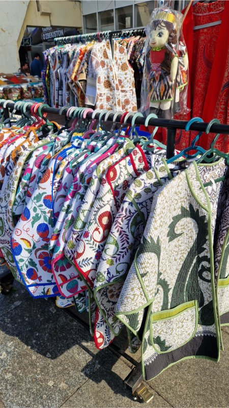
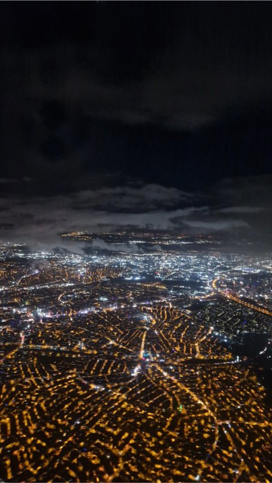
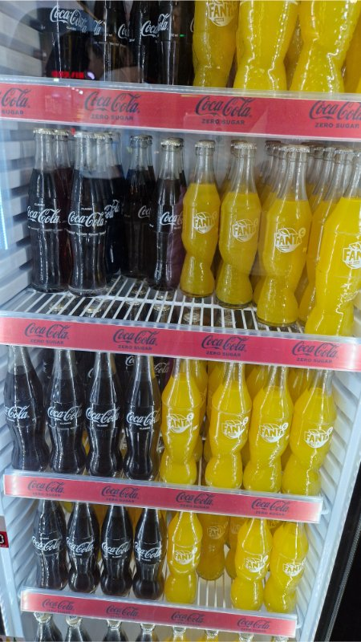

Od „Nemoj, molim te“ do miliona u džepu
U Uzbekistanu smo bile u novembru. Na putu smo bile od 5. novembra do 13. novembra. Da li bih vam preporučila novembar? Ne znam. Imale smo 5 dana prelepo vreme. Išla sam u haljinama. Temperatura je bila i oko 28 stepeni. A onda, zahlađenje i Hiva. Minus. Tri majice, džemper, duks, jakna, termo dokolenice, helanke, teksas bermude, farmerice, šal, kapa, rukavice. I onda mi je bilo okej do prohladno.
Naravno, ponela sam odličan dugački, topao kaput za minus i veliki poluprazan kofer, i obučena i obuvena, 5 minuta pred polazak, sve prepakujem u srednji kofer i izbacim kaput. Da li mi je falio? Jeste. Da li mi je falilo mesta u koferu? Jeste. Jednu od kupljenih jaknica sam morala dati Svjetlani u kofer. Obukla sam džemper, a duks vezala oko struka i nekako sam se spakovala. Violeta mi je rekla da joj ličim na uzbekistansku babu Sonju sa svim slojevima i ruksacima koje sam nosila.

Uzbekistan je povoljan. Nikada nisam donela toliko poklona. Od alve, začina, čajeva, pekan oraha, makadamija, svilenih marama, kašmirske marame, jaknica, odeće sa ručnim vezom, čarapa od kamilje dlake, vezenih novčanika, ručno oslikanih ukrasa za jelku. Prijateljice su kupovale i ćasice. Nacionalni simbol im je nar i sve je na narove. Nije luk kao što su neki mislili. Čak imaju i magnete ručno oslikane. Slikaju ih pred vama. Makadamija je po obliku kao lešnik, a Duška po ukusu podseća na belu čokoladu. Pekan orasi su šuškavi i kao da je dodat ukus vanile.
Elem, Duško je rekao da mi treba manji kofer jer neće stati u kola do aerodroma. I tu je bio u pravu. Ne bi stao. I onda bi morao i on da vozi. Novembar, to doba, zgodan je jer je tu državni praznik 11. I ko radi u prosveti ima još koji dan slobodan.
Ali kako je to sve počelo? Prateći travel influensere, drugarica i ja već neko vreme merkamo Uzbekistan. Dese se relativno povoljne karte za taj period, nešto manje od 600 evra, poklopi se školski mini-raspust i eto nas. Dušku kad sam rekla, sledio se. „Nemoj, molim te.“ „Zašto?“ „Nešto mi je strašno.“ „Zašto?“ „Ne znam. Znam da te neću sprečiti, ali nemoj da mi spominješ Uzbekistan do polaska da se ne sekiram.“ Ni drugi nisu mnogo bolje reagovali. „Uzbekistan? Otkud vam to palo na pamet? Šta ćete tamo?“
Imale smo presedanje u Istanbulu, samo sat i po. Da bih nam povećala šanse, zamolila sam da nas smeste što bliže izlaznim vratima aviona. Dragana je umesto mesta uz prolaz, koje je inicijalno imala, dobila mesto u sredini i krenula je da se žali kako će da smesti svoje noge od metar i dvadeset centimetara. Međutim, dobile smo prvi red u ekonomskoj klasi sa ihaj mesta za noge i uživale. Stale su i one od metar i dvadeset. I opet dobih mesto uz prozor. Beograd blešti iz vazduha, lep je. Mislila sam nema uveče šta da se vidi, kad ima, ima, šljašti i Istanbul. Dobili smo i topli sendvič sa sirom koji se tegli, i jupi, kakva sreća, imaju i jogurt. Kad ono slan. Ajran, zdravo druže stari iz Jordana.

Slećemo u Taškent i kreće horor. Automat za piće mi je napisao da je kartica blokirana. Kako? Najavila sam banci potrošnju iz Uzbekistana. Zatim mi stiže SMS da mi je potrošen roming. Ja još na aerodromu, tek smo sleteli. Ni pipnula telefon. Probam da kupim e-SIM, javlja mi neku poruku da je trebalo da ga kupim kod kuće, da ne mogu sada. Dragana menjala 20 dolara, dva puta po 10, a mislila da je promenila 100 i da su joj dali manje novca. Sreća, imaju kamere, pa je taj problem rešen. Za sto razmenjenih dolara smo u momentu postali milioneri u uzbekistanskim somovima. I ostali problemi su se rešili. Kupovina e-SIM kartice nekako proradi. Kreditna kartica nije bila blokirana, na drugim mestima sam normalno plaćala. Što se tiče interneta, pouzdaniji je bio sa kupljenim SIM karticama. Meni su sa e-SIM-om samo tekstualne poruke uvek prolazile. Sliku nisam mogla poslati, a mape i poziv taksija preko Yandexa i Uklona su mi malo radili, malo nisu.
Taksi preko Yandexa i Uklona koštao nas je svega dva evra za pola sata vožnje. Taksisti koji se okupljaju oko vas na stanicama traže bar deset puta više, što takođe nije puno, pogotovo ako se podeli. Taksisti su vrlo uporni, čak neprijatni koliko insistiraju da su bolji od Yandexa. Čak nekako i otvore Yandex i dobiju cene veće od njihovih, pa su kao povoljni. Kako to odrade, ne znam. Uglavnom, velika većina taksija im je beli ševrolet. I na širokim bulevarima kroz gradove oni su u većini. Najveći deo vremena sam imala utisak „putovanja kroz vreme“, kao npr. kad sam videla Coca-Colu u staklenim flašicama.
